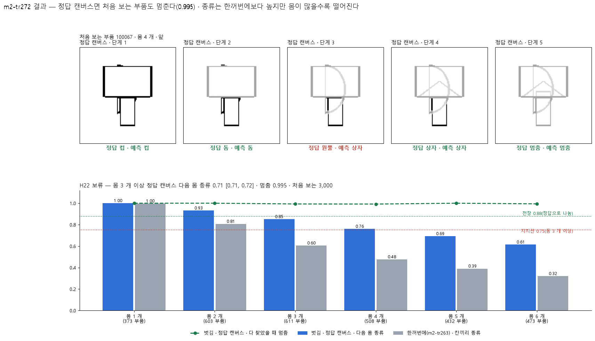

실험 m2_tr0272_h022_정답캔버스
목표 G1.2 view 모음 → 파츠별 CAD code(CadQuery · 그 전 「3 면도 → 파츠별 CAD」 · 지금 M2 는 위 · 앞 · 옆 고정 세 장만 받음 → 아무 각도 N 장으로 바꿀 것 · 11-20) · G1 첫 제품 — 피규어 · 메카 사진 여러 장 + 치수 → 숨은선 3 면도 + 파츠별 CAD · G0 임의의 이미지 → CAD 코드 · 빌린 가정 3: 생성기기하 · 정답3D · 정사영 · 갚는 계획: 진단 · 정답 캔버스는 시험 때 못 씀(망이 낸 몸으로 흐려야 함) — 지지면 노출 차를 막는 학습(m2-tr273)으로 갚음 · 정답 3면도 · 생성기 부품 · 목표 시험지 값: 안 잼 (!)
m2-tr271 벗겨내기가 무너진 원인은 노출 차인가 — 처음 보는 부품에도 정답 캔버스(정답 몸으로 흐리게)를 주면 몸을 하나씩 맞게 찾고 멈추나?
판정 · H22 보류(몸 3 개 이상 정답 캔버스 다음 몸 종류 0.715 [0.71, 0.73] · 지지선 0.75 아래 · 멈춤 0.995 는 넘음) — 멈추지 못한 원인은 노출 차로 강하게 뒷받침(정답 캔버스면 0.995) · 종류는 한꺼번에(칸끼리)보다 몸 개수마다 0.12 ~ 0.29 높지만 몸이 많을수록 떨어짐 · 노출 차를 막는 학습의 위 끝은 처음 보는 몸 3 개 이상 약 0.71 · 다음: 노출 차 막는 학습(m2-tr273)은 그 위 끝까지 오르는지 · 종류가 몸 수로 떨어지는 까닭은 따로
| 가설 | 주장 | 결과 | 근거 |
|---|---|---|---|
| H22 | 벗김이 무너진 원인은 노출 차다 — 정답 캔버스를 주면 처음 보는 부품에서도 몸을 하나씩 맞게 찾고 다 찾으면 멈춘다 | 보류 | 몸 1 ~ 6 개 정답 캔버스 다음 몸 종류 1.00 · 0.93 · 0.85 · 0.76 · 0.69 · 0.61 대 한꺼번에 칸끼리 1.00 · 0.81 · 0.60 · 0.48 · 0.39 · 0.32 · 계속 0.98 ~ 1.00 · 멈춤 0.99 ~ 1.00 · 배운 부품 300 정답 캔버스 0.84 · 0.99 · 0.99(m2-tr271) · 천장 0.88(m2-tr270 B0) |
분석
한 줄로
물음: m2-tr271 벗겨내기는 시험 때 멈추지 못했다. 처음 보는 부품에도 정답 캔버스(정답 몸으로 흐리게 · 학습 때와 같은 입력)를 주면 몸을 하나씩 맞게 찾고 멈추나?
답: 반쯤이다(H22 보류). 멈춤은 0.995 로 거의 다 맞는다 — 멈추지 못한 건 노출 차 탓이다. 하지만 몸 3 개 이상의 다음 몸 종류는 0.715 로 지지선(0.75) 아래다. 한꺼번에보다는 몸 개수마다 0.12 ~ 0.29 높지만, 몸이 많을수록 여전히 떨어진다.
왜 이 실험을 했나
m2-tr271 에서 벗겨내기는 거의 모든 부품에 몸을 6 개씩 냈다. 배운 부품에 정답 캔버스를 주면 멈춤 0.99 였다. 노출 차를 고치는 학습(비쌈)에 들어가기 전에, 정답 캔버스로 처음 보는 부품을 재 그 학습의 위 끝을 싸게 봤다.
바꾼 것 하나
시험 입력의 캔버스. tr271 시험 때의 「망이 낸 몸을 지어 그린 캔버스」 대신 「정답 몸을 혼자 그린 캔버스」 를 단계마다 넣었다. 처음 보는 3,000 부품의 몸 그림을 새로 그렸고, 부품 선이 m2 입력과 화소 1.0 같고 몸 수가 정답과 같음을 확인했다. 망은 tr271 그대로(학습 없음)다.
결과

| 처음 보는 3,000 | 몸 1 | 2 | 3 | 4 | 5 | 6 |
|---|---|---|---|---|---|---|
| 벗김 · 정답 캔버스 · 다음 몸 종류 | 1.00 | 0.93 | 0.85 | 0.76 | 0.69 | 0.61 |
| 한꺼번에 · 칸끼리 종류 | 1.00 | 0.81 | 0.60 | 0.48 | 0.39 | 0.32 |
| 벗김 · 정답 캔버스 · 멈춤 | 1.00 | 1.00 | 0.99 | 0.99 | 1.00 | 0.99 |
| 가설 | 결과 | 판정선 | 판정 |
|---|---|---|---|
| H22 정답 캔버스 · 몸 3 개 이상 | 종류 0.72 [0.71, 0.73] · 멈춤 0.995 | 종류 ≥ 0.75 이고 멈춤 ≥ 0.9 지지 · 종류 위 < 0.6 기각 | 보류 |
왜 이렇게 나왔나
확인한 것
- 정답 캔버스면 처음 보는 부품도 다 찾았을 때 멈춘다(0.995) · 몸이 남았을 때 계속도 0.98 ~ 1.00 이다. tr271 의 「멈추지 못함」 은 노출 차 탓이다.
- 다음 몸 종류는 몸 개수마다 한꺼번에(칸끼리)보다 높다. 그래도 몸 6 개면 0.61 로, 정답으로 나눠 준 천장(0.88 · m2-tr270)보다 낮다.
짐작 (아직 확인 안 함)
- 정답 캔버스에서도 아직 안 찾은 몸들의 선은 진하게 섞여 있다. 남은 몸이 많을수록 그 가운데서 다음 몸 하나를 가르기가 어려워, 종류가 몸 수로 떨어진다.
한계
- 정답 캔버스는 시험 때 못 쓴다. 노출 차를 막는 학습이 예측 캔버스를 이만큼 만든다는 보장은 없다 — 이 값은 그 학습의 위 끝이다.
- 단계 과녁이 부피 순이라, 부피가 비슷한 몸은 순서가 바뀌어도 틀림으로 센다(종류 값이 낮게 나올 쪽).
- 한 망(60 바퀴 · 학습 손실 아직 내려감) · 정답 3면도 · 생성기 부품.
배운 것과 다음
벗겨내기는 멈추는 법은 처음 보는 부품까지 배웠다. 노출 차만 막으면 몸 3 개 이상 종류가 한꺼번에 0.43 근처에서 0.7 근처까지 갈 수 있다(위 끝).
- 노출 차를 싸게 막는 길부터: 시험 때 흐리게 하는 자리를 넓혀(굵힘 5 · 9 화소) 예측 캔버스로도 멈추는지(학습 없음).
- 그래도 안 되면 망이 낸 몸으로 흐린 캔버스를 섞어 다시 학습한다.
- 몸 수로 떨어지는 종류는 따로 — 단계 안에서도 섞인 선을 가르는 문제라, 마스크 질의(규칙 답 대기)와 함께 본다.
실험 기록
- 카드(식 · 판정식 · 사례 그림 · Lean 「판정 못 채움」 — 보류라 칸이 안 채워짐) · 정답272.py(그리기 · 검사 · 흐름 · 재기 · 그림) · 잼.json · 흐름.png · 결과.png · 원본 out/설명/캐드부품/모델272(시험몸틀.npz · 맞음.npz)